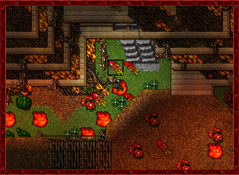
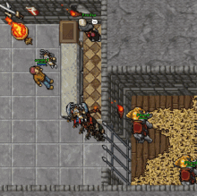

About Tibia
Game History
Tibia is one of the oldest MMORPGs still active today, having been launched in 1997 by CipSoft, a German company. Here is a summary of the game's history and evolution:
Origins and Initial Development 1996-1997:
The development of Tibia began in 1996 by four university students: Stephan Börzsönyi, Ulrich Schlott, Guido Lübke, and Stephan Vogler. The game was officially released in January 1997.
Programming Language: Tibia was initially programmed in C++ and was one of the first MMORPGs to offer a continuous and persistent online world.
First Version: The first version of the game had simple graphics and a rudimentary interface, but offered immersive gameplay that attracted players interested in adventure and exploration.
Evolution and Expansion
Late 1990s and early 2000s: Tibia started gaining popularity, especially in Europe, due to its engaging gameplay and active community.

Addition of New Content:The game received several updates that included new areas, quests, monsters, and items. The mechanics of combat and character skills were also improved.
Business Model: Tibia adopted a freemium model, where the basic game was free but offered a premium subscription (Premium Account) that provided access to exclusive areas, additional quests, and other advantages.
Impact and Strong Community: Tibia developed a strong and dedicated community. Many players formed lasting friendships and even marriages that began within the game.
Role-playing and Lore: The game is rich in lore and encourages role-playing, with detailed mythology and engaging stories for players to explore.
Events and Updates: CipSoft regularly organized in-game events and released significant updates to keep the player base engaged.
Technologies and Innovations
Flash Client and HTML5 Client: To attract new players and retain the existing player base, CipSoft launched a Flash client in 2012 and more recently started working on an HTML5 client to allow Tibia to be played directly in the browser.Security and Game Integrity: CipSoft implemented various measures to combat the use of cheats and bots, including automated detection systems and an active support team.
Present Day
Continued Popularity: Despite competition from many modern MMORPGs, Tibia remains popular due to its classic gameplay, dedicated community, and continuous evolution. Updates and Support: CipSoft continues to release regular updates that add new content, improve gameplay, and address player concerns.Interesting Facts
Game Worlds: Tibia has several game worlds (servers), each with its own economy and community. Memorable Deaths: Due to the game's punitive death system, where players can lose experience and items upon dying, stories of memorable deaths are common and often shared by the community.Player Events: The Tibia community is known for organizing their own events within the game, including competitions, parties, and group hunts. Tibia remains a testament to the longevity and passion that a well-designed game and an engaged community can provide over decades.
